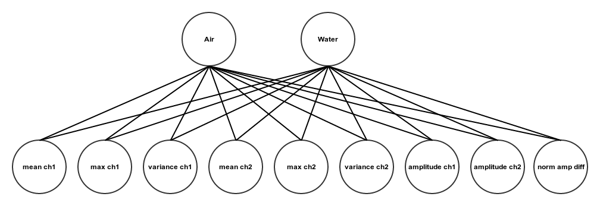

Detect if phone is under water. This is a binary classification problem where we are only interested in differentiating between two states - in air, or under water - as opposed to detecting the event of the device being submerged, or the current depth.
Lack of a dedicated water sensor limited us to computer-vision and sound-based solutions, where computer-vision was ruled out as infeasible and also unwanted from a privacy point. Sound can be recorded from both the main microphone and the back-facing one. A tone is generated as a reference and the recordings can be compared between microphones and states in both time and frequency domains. To make detection independent of application, the generated tone is in the ultra-sound range and hence not audible. In the absence of an acoustic model for the phone, the proper way to address this problem is to view it as a supervised machine learning problem.
The approach outlined above requires us to obtain labeled data, i.e. a set of feature values and the corresponding state.
To obtain data, a 22 KHz is generated procedurally, played in mono, and recorded at 44 KHz in stereo so as to activate both microphones. The two channels are then separated and respective samples are run through a 512 bin FFT whereafter the resulting spectrum is log-normalised and inserted in a 100 frame spectrogram. Several features of the two spectrograms are computed: the mean and max values, and the variances for both channels computed for the slice of bins closest to the Nyquist frequency, i.e. the generated tone. Together with the average amplitudes during spectrogram generation, we obtain 8 feature values per generation used for classification. An additional feature is computed from the difference in amplitudes between channels.
The learning model is a one-layer neural network, i.e. a perceptron with 9 inputs and two outputs, one for each state. The state with highest output value is considered to be the current one.
A set of pre-trained biases and weights are stored in the app for online state classification. To minimise error, three consecutive classifications of a particular state must be recorded before switching to this state.